Fintech · N26 · March 2022
What is N26?
N26 is a mobile banking solution based out of Germany that serves 7 million customers across 25 countries.
With features like spaces, round-ups, automations, cashback, and statistics, N26 helps users manage their spending to reach their financial goals. It provides a free basic current account with a debit card, overdraft, investment products, and premium accounts for a monthly fee.
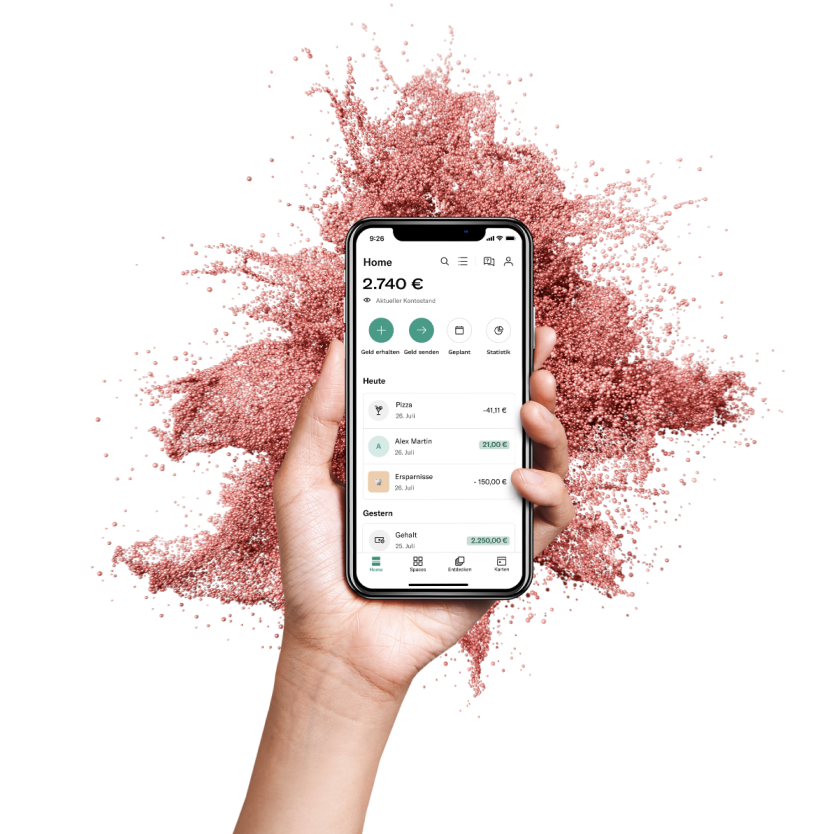
N26 Highlights
What I did at N26
The Home-feed team has the most cross-collaboration across N26 — be it launching Crypto, kicking off Trading products, or Overdraft. My secondary objective was to help increase discoverability of such products through the Home section of the app.
My other responsibilities in the design team included:
- ✓Measuring UX — analyse, communicate and follow up on monthly CSAT results, tracking the right UX metrics.
- ✓Research Lab volunteer — helping designers set up user research and launch tests across research platforms.
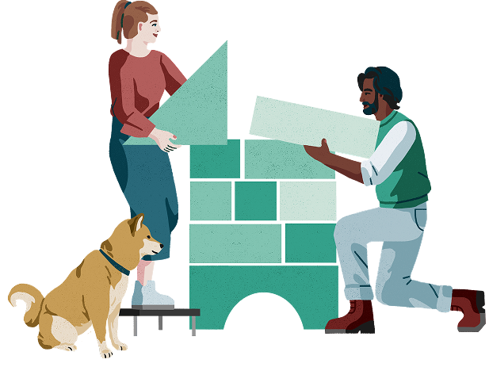
Multi-activity Feed
Evolving the Main Account Feed into an All-Activity Feed.
With the evolution of Spaces into fully functioning accounts with IBANs — and later also cards — we wanted to help users feel in control of their activity across all their accounts through their Feed.
Shoutouts
Rubin (Illustrator), Katie (UX Writer), Mireia (Researcher), Lea (PM), Dan (CPO), Engineering (FE & QE — most collaborated with) and the Data Science team.
The Problem
Spending in Spaces was invisible on the Feed
Users with spending Spaces (Spaces with IBANs) don’t see their outgoing transactions in the Feed when they log in — making it hard to stay on top of their spending.
Spaces now supports up to 10 IBANs across personal & shared Spaces, with Virtual (and potentially Physical) cards in development — plus plans for Crypto, Overdraft and Instalments. Activity from all these spending Spaces needs a unified view on the Home feed.
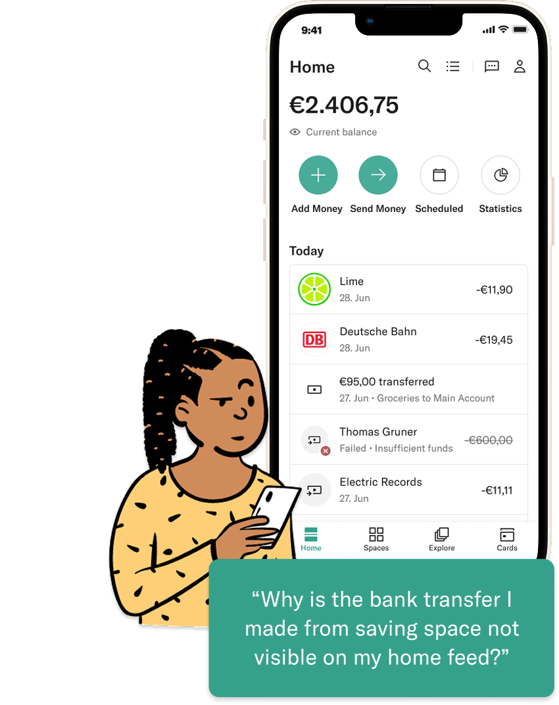
How Might We?
How might we help users who have a Space with IBAN view the activity on their home-feed, at a glance?
Provide a Feed experience with relevant information at a glance that enables confident decision making and creates peace of mind.
Success Metrics
- % increase in MAU activity and retention
- % of Spaces users churned to the All-Activity view
- Ratio of usage between Main Account and All-activity feed
- % increase in user satisfaction via CSAT score
- % of users upgrading to the next membership tier
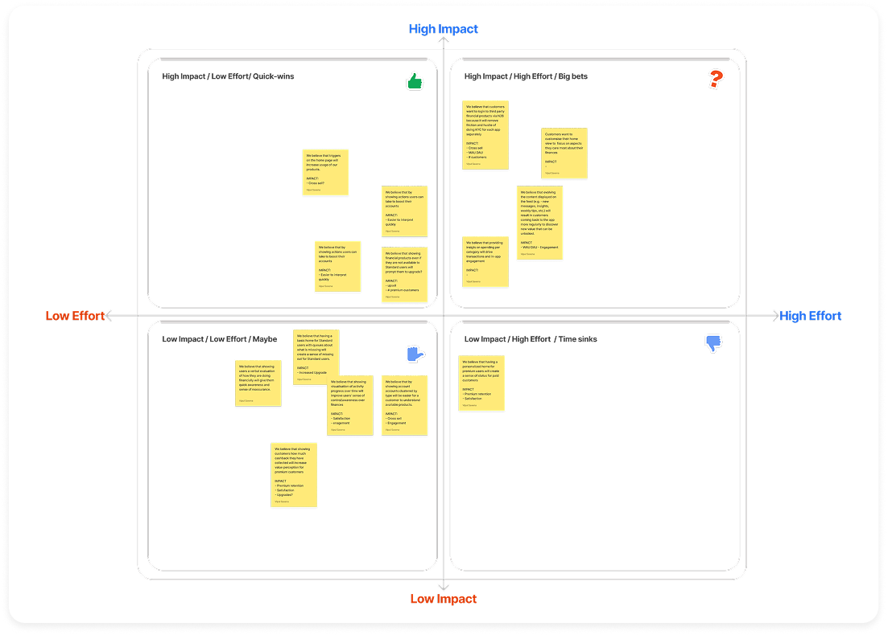
Discovery · Research
We ran six customer interviews to learn more about user needs
The goal: understand users’ mental model when keeping track of transactions across their different accounts.
Our learnings
“I want to see Spaces transactions in the Spaces area too… but for my everyday, the Home is where I want to easily see all my transactions.”
Learned · Main account transactions hold top priority, while Spaces transactions vary depending on the Space’s purpose.
“If I don’t have enough money for a payment from a Space or Main account, I want something very visible telling me in advance.”
Learned · It’s okay to have redundancy across sections if it increases visibility on important information.
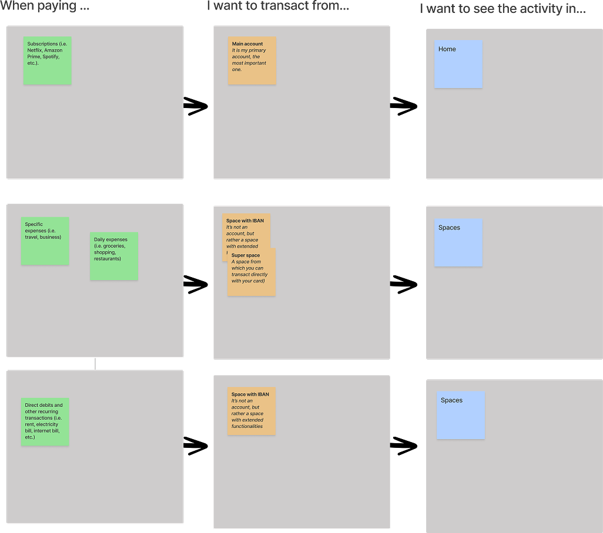
Stay updated
Updates & actions on the latest big transactions, security alerts, etc.
Digestible overview
Overviews in a digestible manner; easily identify anything needing attention.
No surprises
Avoiding negative figures or unpleasant surprises.
In control
Actionable; show & hide based on relevancy; customise notifications & updates.
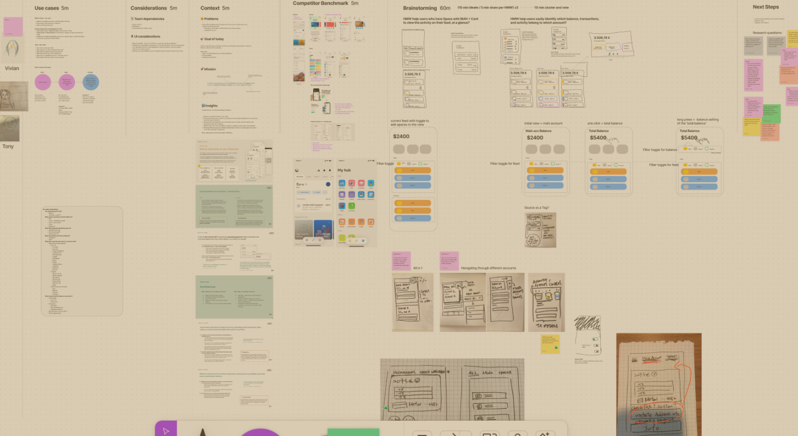
Ideation
Next step was a design-led cross-functional workshop to ideate on possible solutions
Agenda included reviewing existing research, assessing competitive solutions, and a sketching session with “How Might We” prompts to generate divergent concepts.
Concepts
Designed three possible hypotheses
Concept A
All Accounts view
Seeing all accounts together gives a better overview. Switching between accounts increases mental load. Quick actions are tied to the main account.
Concept B
Multi-select Accounts
Filtering between Main account and Spaces with available-balance information gives users a complete overview of their finances.
Concept C
Switch between accounts
See all accounts at once or one at a time — a simplified experience with a sense of control. Quick actions change with the selected account.
Validation
Tested the concepts for usability with 8 customers
Insight
Takeaway
Most users liked viewing all accounts at once, but the Main Account view still holds more importance.
Keep Main Account view as the default, with an option to switch between feeds.
The option to multi-select Spaces is useful to some users — they prefer choosing IBAN-enabled Spaces over normal ones.
Letting users choose their preference is key — but we must balance the complexity and be sure of the feature’s usability.
Users expect quick actions to change with account selection; in multi-select they were rather confused.
For multi-select, we could explore letting users choose which account to action from — but this definitely adds complexity and tampers with the purpose of quick actions.
Swiping accounts with top overviews felt like an easy and valuable experience.
Explore a top-navigation scheme further and evolve it into something more obvious to users.
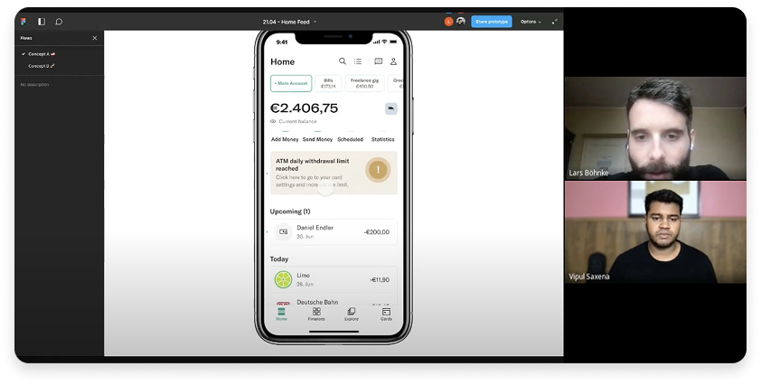
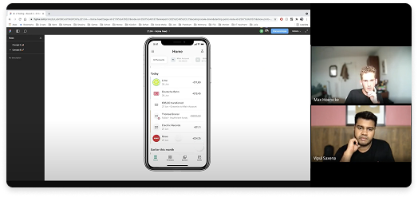
8 moderated remote usability sessions run over video call.
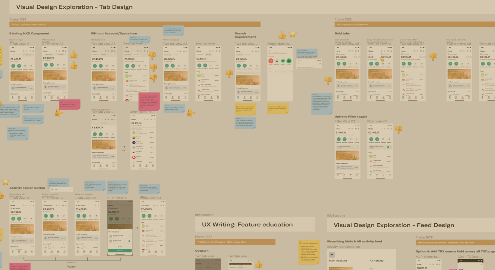
Iteration
Led design reviews with cross-functional teams to iterate on the insights
Participants included Engagement-team designers, Lead designers from different segments, PMs, Engineering, and the Head of Product.
Outcome
Launch to learn 🚀
Shipped Concept C — launching only the Home and “All activity” feed to a first monitored cohort. The experiment was a success.
Rolled out to 25 countries (Germany first) — now refining v1 from in-app feedback.
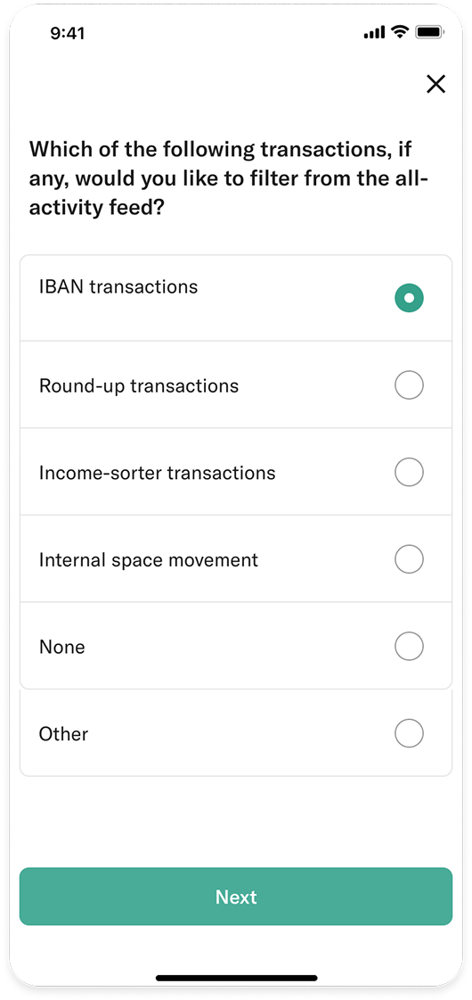
Case study · wrap-up
Researched, shipped, and measured
The Multi-activity Feed launched into production and rolled out across Europe — grounded in research, validated in testing, and shaped with the whole team.
Highlight
MoneyBeam Reactions
⚡ 1 week Hack-a-thon · On Production
Allow users to express “thanks” to their friends for a MoneyBeam (N26-to-N26) transaction while confirming receipt of payment.
A delightful interaction incentivizes users to send thanks to their peers; acknowledgement from the recipient helps the sender gain confidence. Time was limited, but to expand the idea we explored more expressions, notes, and gifs to make it more customisable.
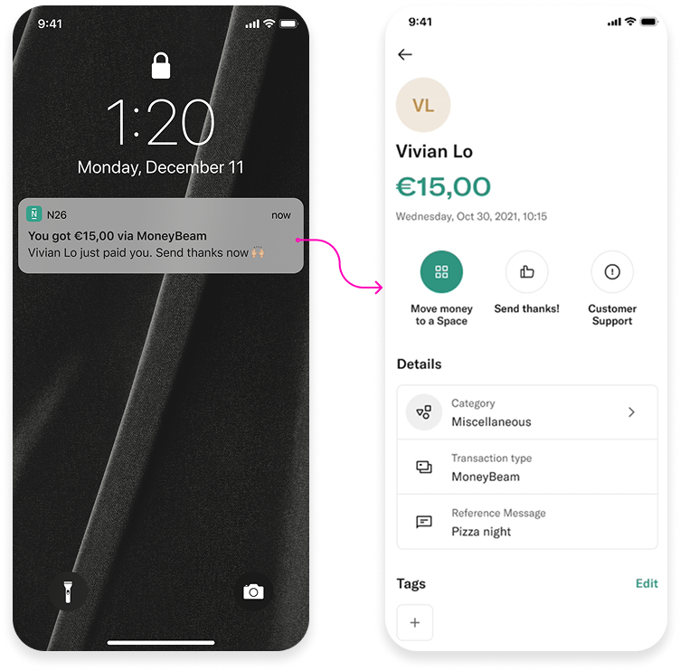
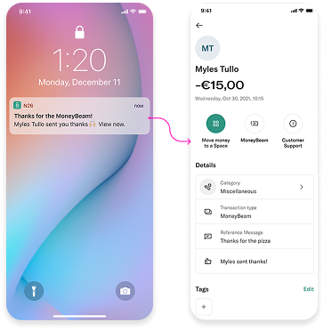
Highlight
Feed ↔ Crypto
🗓️ 2 week design sprint · On Production
Surface crypto activity within the Home feed so users can track their trades alongside everyday transactions — increasing discoverability of a new product right where people already look.
- ↑Crypto surfaced natively in the transaction feed
- ↑Consistent activity model across all product lines
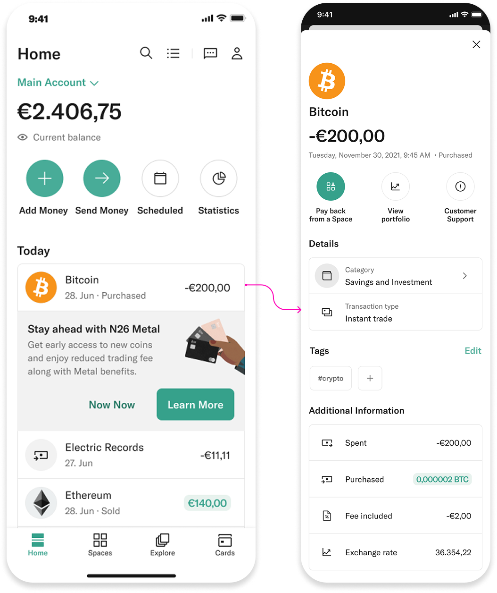
Highlight
Search filters & suggestions
🗓️ 4 week design sprint · On Production
Improve the search experience to help users find relevant transactions with suggestions, filters, and tags — across both the mobile app and WebApp.
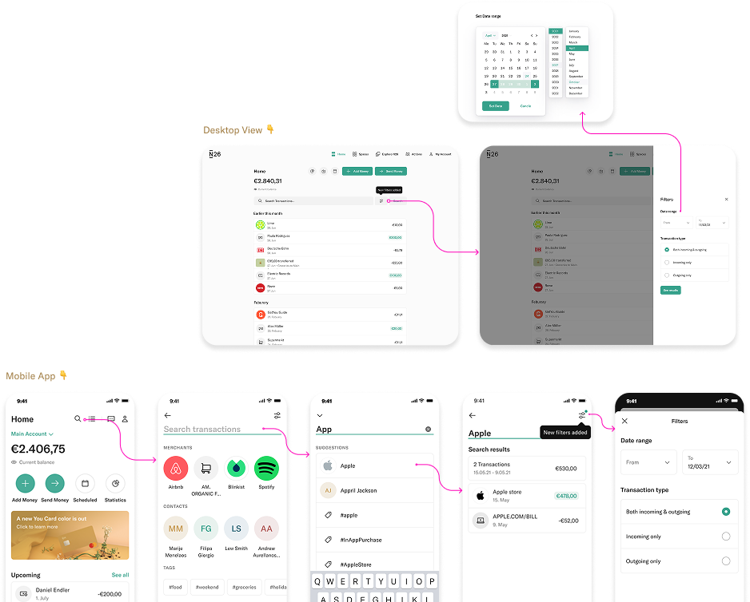
Fin
Thanks for watching.
Thanks for your time — whether you explored this on your own or we went through it together. I’d love to connect.
© 2024 · Vipul Saxena · N26 · Product Design Portfolio